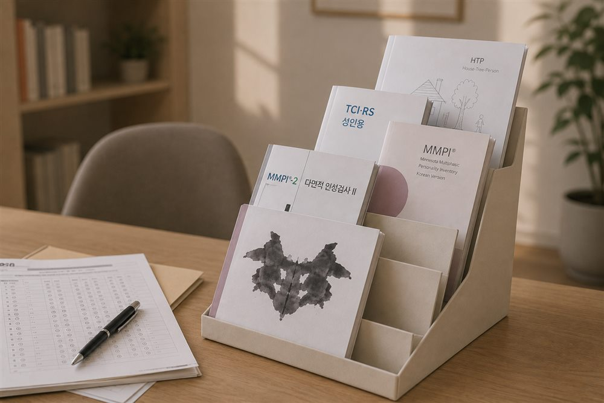
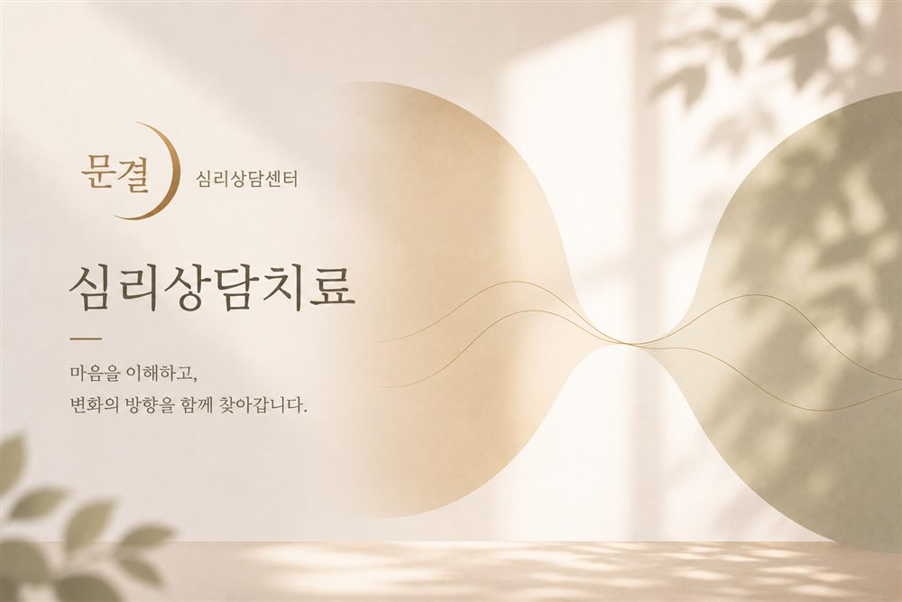

Depression
Low mood, reduced motivation, and lethargy
Opening November 2026
When the mind recovers, life moves again.
MoonGyeol (문결) means both a door of the mind and the grain of the mind — the unique texture of each person's inner world.
What does your MoonGyeol look like today?
And how is your sleep?
About MoonGyeol
Behind every symptom lies a person's own life and story. MoonGyeol Psychiatry Clinic does not define a person by a single diagnosis.
We believe that difficulties of the mind are not simply emotional problems, but are intertwined with the body, the brain, sleep, and daily rhythms. That is why MoonGyeol looks as closely and precisely as each person needs, and works together to find a path to recovery that fits them.
Director, MoonGyeol Psychiatry Clinic
Book
Author, The Star Named You (당신이라는 이름의 별이 궁금합니다)

YouTube
Runs the YouTube channel Story-filled Psychiatry, sharing a variety of stories about mental health and the mind
Mind & Sleep
Low mood, reduced motivation, and lethargy
Persistent anxiety and unexpected panic symptoms
Insomnia, hypersomnia, and disrupted sleep rhythms
Recovery for an exhausted mind and body
Difficulties with attention, executive function, and impulsivity
Evaluation and management of memory loss and cognitive change
Depression that has not responded sufficiently to prior treatment
Mind & Brain Assessment

Looks at current brain function through EEG activity.
Learn more →Looks at current autonomic nervous system status and the body's stress response through heart rate variability (HRV).
Learn more →
Objectively evaluates ADHD-related cognitive function, including attention and impulse control.
Learn more →
Evaluates a range of cognitive functions, from memory and attention to processing speed and executive function.
Learn more →Screens for the possibility of mild cognitive impairment through EEG and cognitive function testing.
Learn more →
A comprehensive psychological evaluation to more deeply understand your psychological difficulties and individual characteristics.
Learn more →Personalized Treatment

Medication that considers both symptoms and daily life

Relaxation and stress regulation using breathing and physiological signals
Learn more →
Treatment using non-invasive brain stimulation
Learn more →
Non-invasive photobiomodulation using light
Learn more →
Specialized treatment for treatment-resistant depression
Learn more →
MoonGyeol Counseling Center
Offers counseling programs led by professional psychological counselors, in partnership with MoonGyeol Psychiatry Clinic.
Our System
We look closely and precisely.
We comprehensively evaluate symptoms, lifestyle, sleep, stress, and cognitive function.
We help you understand.
We explain the assessment results and your current condition in a way that's easy to understand.
We treat.
We combine whichever medication and non-medication treatments are needed.
Back to daily life.
The goal of treatment is not simply to eliminate symptoms, but to restore your life.
Sleep & Stress
QEEG · HRV · Biofeedback · Relaxation Therapy · Sleep Assessment
A Space to Recover
The first door, welcoming you in comfort
A space for accurate assessment
A space to ease tension in body and mind
A space for brain stimulation and relaxation together
A quiet space for recovery
If your mind feels heavy, your sleep has fallen apart,
and returning to daily life feels overwhelming,
you don't have to endure it alone.
MoonGyeol Psychiatry Clinic will be with you.
※ This connects to our main line. Please replace with the actual booking link/phone number.